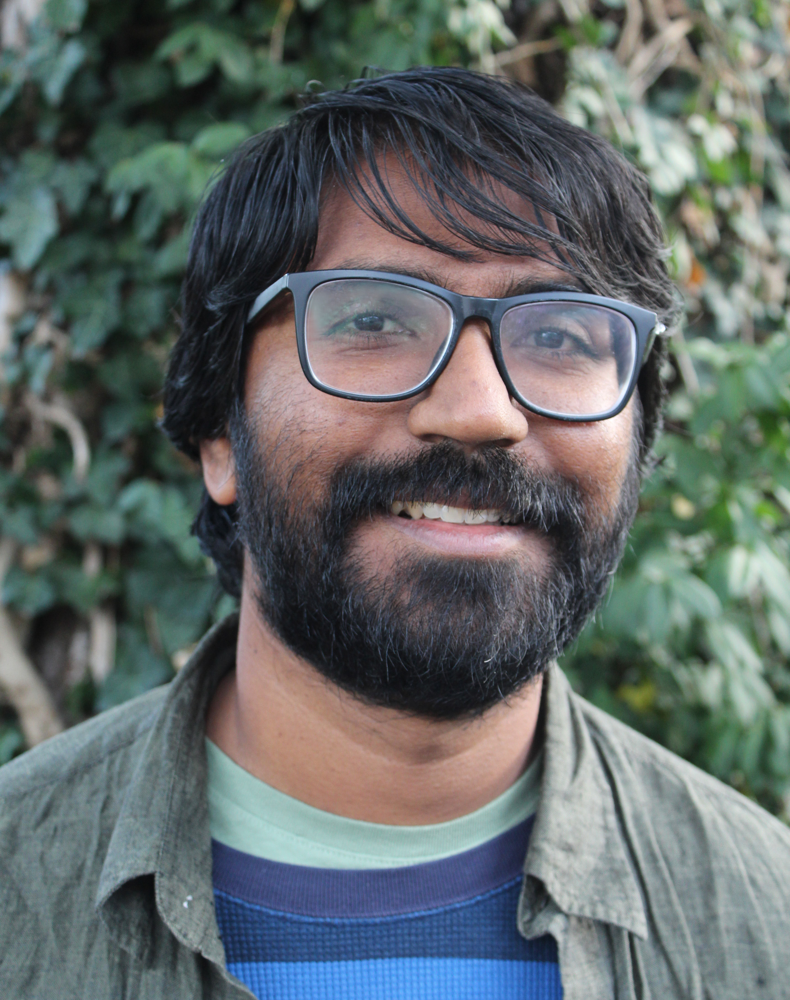

Postdoctoral Fellow
Mathematical Biosciences Institute
Ohio State University
Education
PhD: The University of California, Berkeley, Physics, 2016.Research Interests: Pattern formation, spatially localized structures, dynamics on networks.